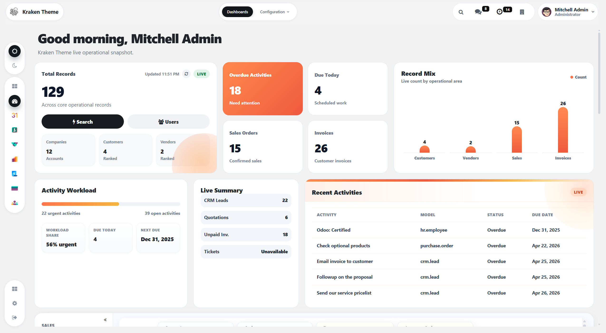
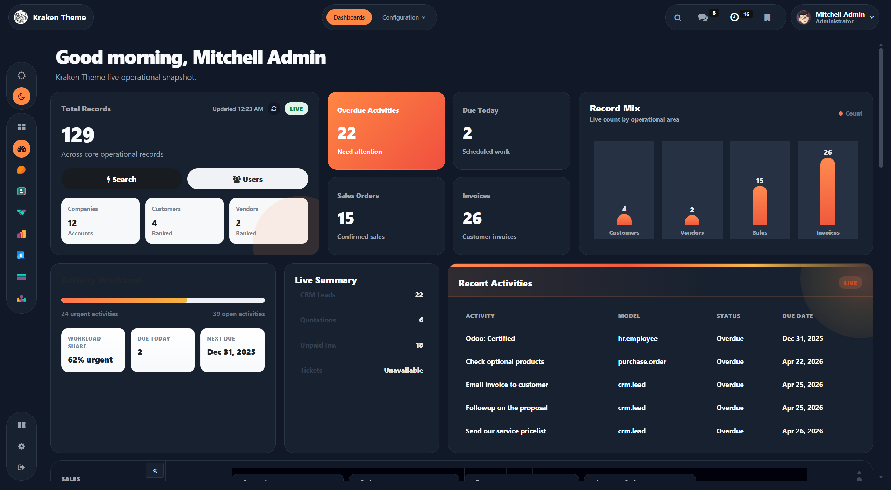
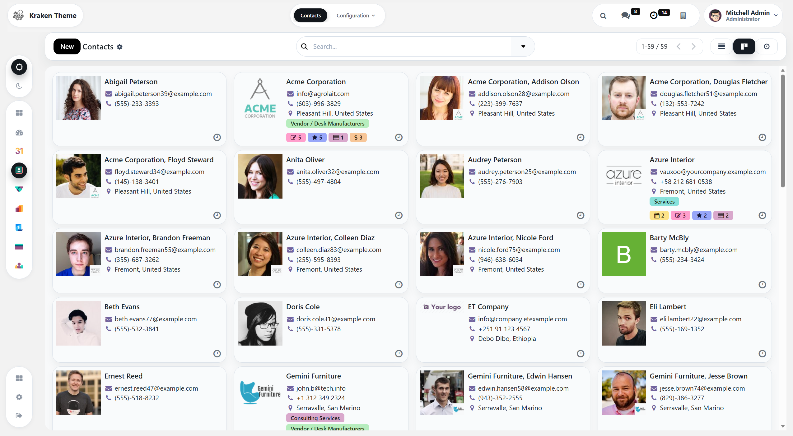
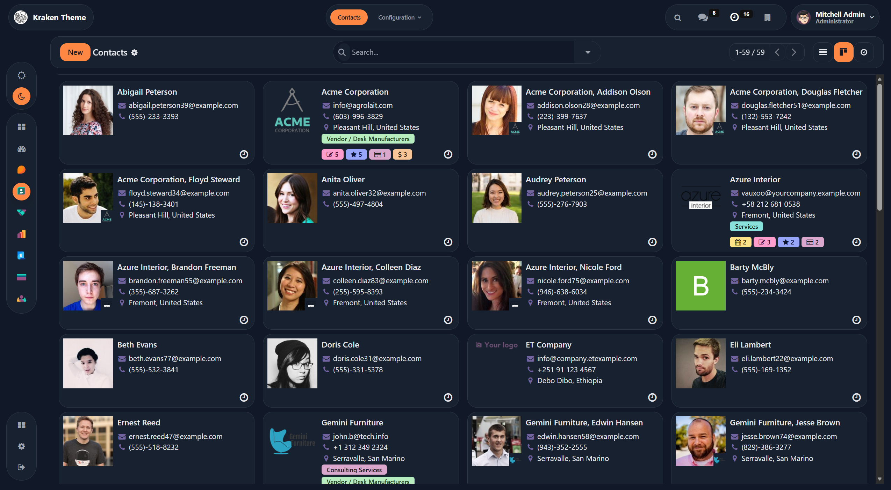
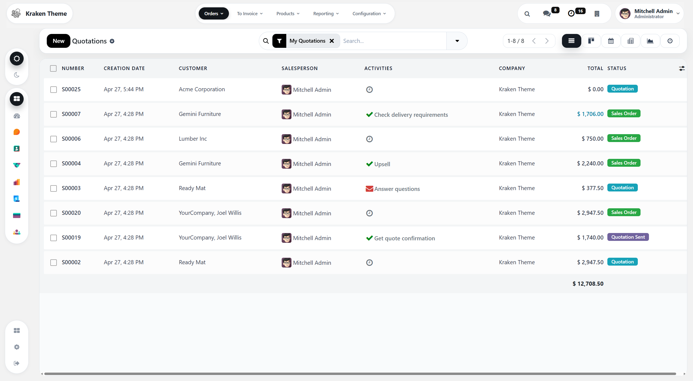
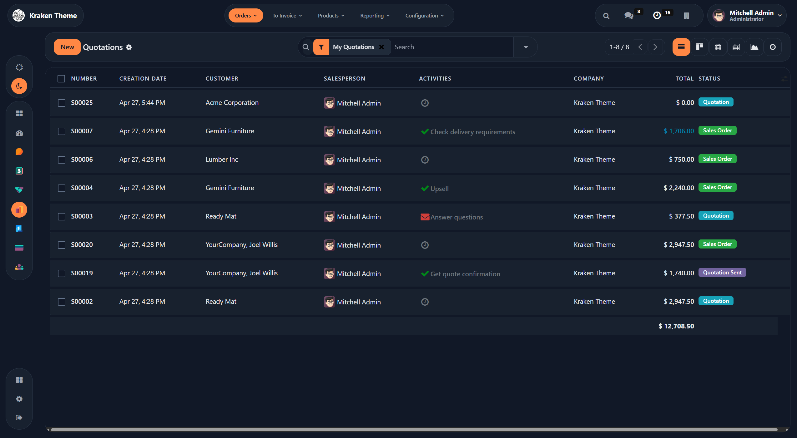
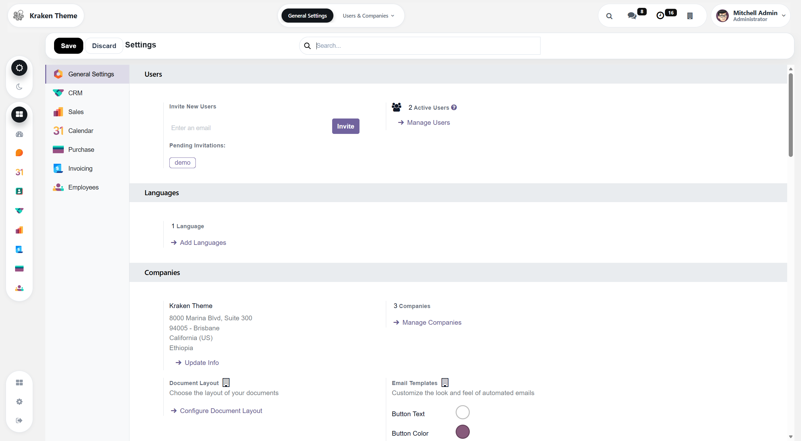
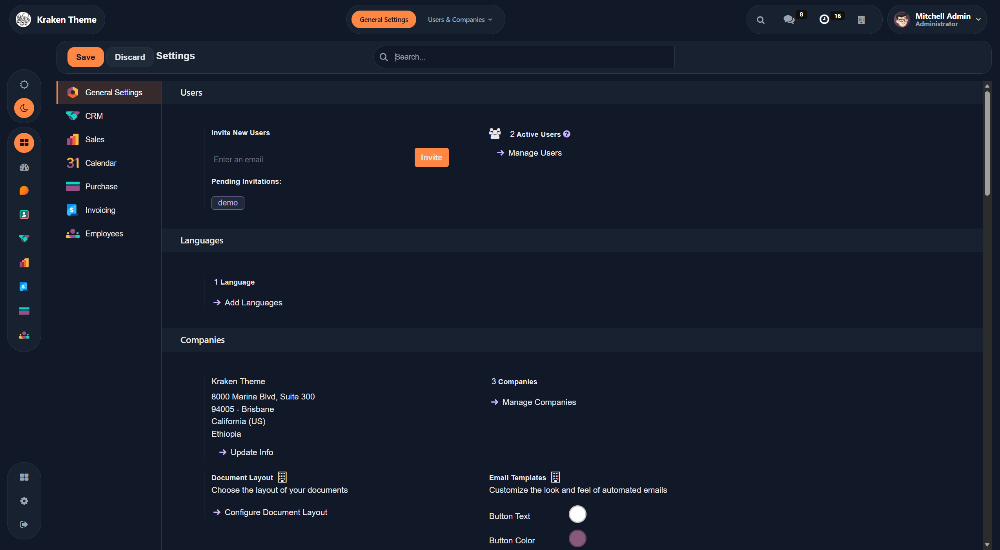
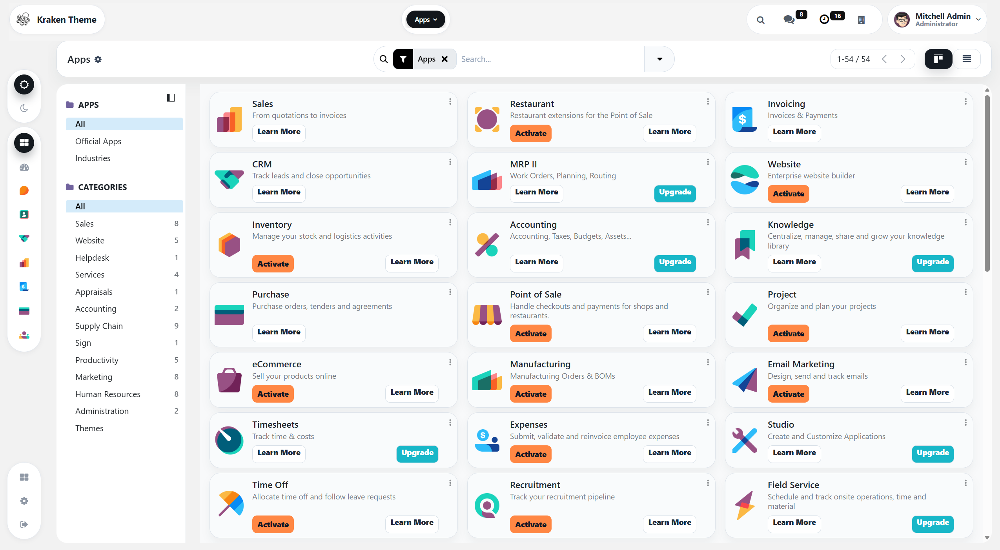
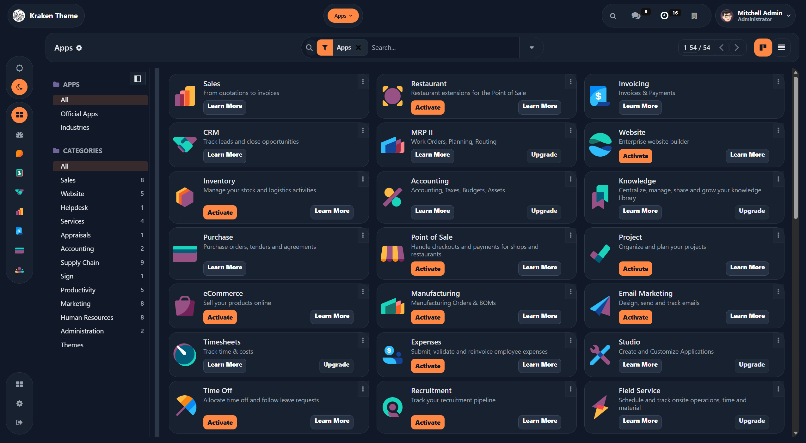

THE INTERFACE SETUP

See it in Action
A quick operational flow through the Kraken backend experience.


Action-Ready Dashboard
Ditch the boring app launcher for a real dashboard that gives full context before the day begins.


The Main Stage
Top navigation and sidebar harmonized to stay completely out of the way of your records.


Surgical Data Lists
Tightened padding, muted borders, and bold headers to make scanning rows feel effortless.


Make it Yours
Drop in your colors, your logo, your aesthetic—Kraken morphs into your proprietary software.


Clean App Launcher
A beautifully spaced grid giving you instant access to all your installed modules.